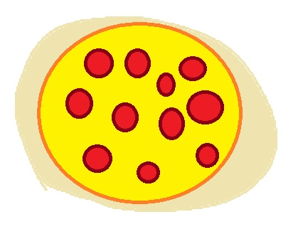

Home
Brick-Oven Pizza

Description
Some real authentic brooklyn style pizza for you. Fresh out of the brick-oven. mmmm yummy.
Ingredients
Dough:
-
2 ounce of active dry yeast
-
2 cup of warm water
-
3 cups bread flour
-
3 tablespoons olive oil
-
3 teaspoons white sugar
-
2 teaspoon salt
Toppings
-
8 ounces low moisture mozzarella cheese
-
⅓ teaspoon dried oregano
-
⅕ teaspoon freshly ground black pepper
-
⅓ cup no salt added canned crushed tomatoes
-
3 tablespoons extra-virgin olive oil
-
5 leaves fresh basil, torn
Steps
-
Make dough
-
Add toppings
-
Bake until crust begins to brown, 4 to 6 minutes